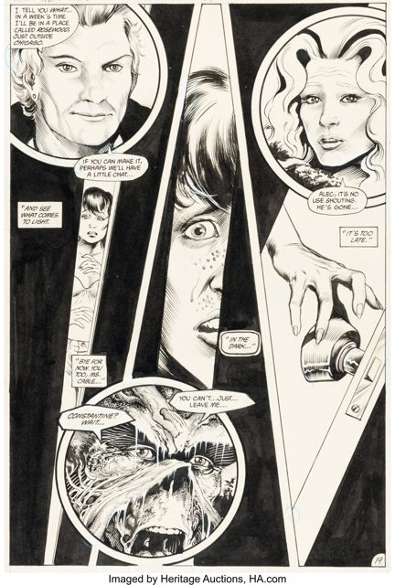

Interior page
First appearances:
Deadpool
Wade Wilson — Deadpool — debuts in The New Mutants #98 (Marvel, 1991), created by Rob Liefeld and Fabian Nicieza. Hired to take down Cable and the New Mutants, he became one of the defining characters of the decade. The mutant External Gideon also makes his first appearance in this issue.
1sale tracked
$960,000lowest
$960,000highest
$960,000total
John Constantine
John Constantine's first full appearance is The Saga of the Swamp Thing #37 (DC, 1985), in Alan Moore's Swamp Thing run — a figure later identified as Constantine had appeared briefly and unnamed earlier in the series, in issue #25. The character was created by Alan Moore, Steve Bissette and John Totleben; this issue's art is by Rick Veitch and John Totleben.
1sale tracked
$35,000lowest
$35,000highest
$35,000total

Image: Heritage Auctions (HA.com)
Carrie Kelley
Carrie Kelley — the 13-year-old who saves Batman's life and goes on to become Robin — first appears in Batman: The Dark Knight Returns #1 (DC, 1986), the opening chapter of Frank Miller's Dark Knight saga.
1sale tracked
$2,400,000lowest
$2,400,000highest
$2,400,000total
Cover